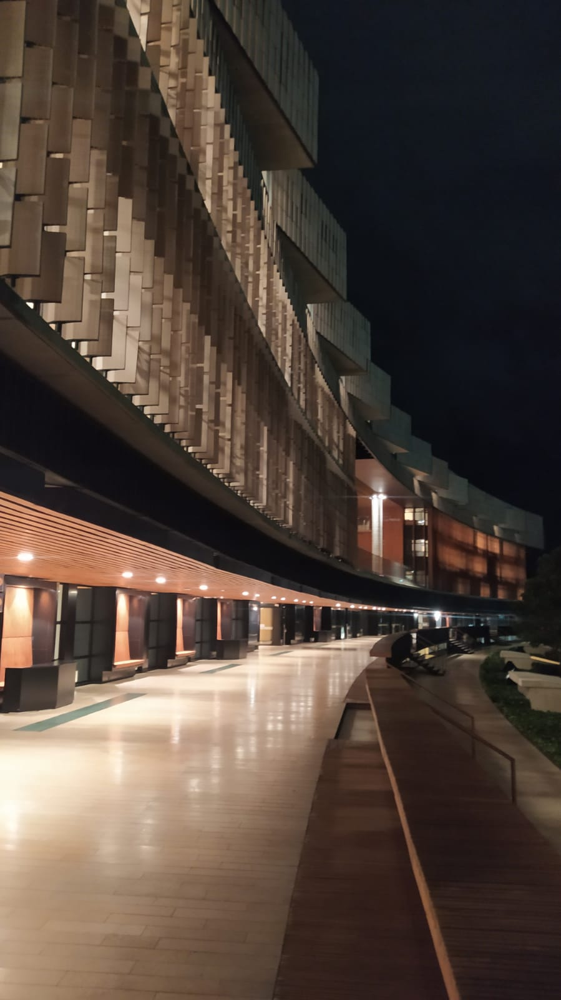

Ingresé a la Universidad de La Sabana en el programa de Ingeniería Informática en el año 2022 y actualmente me encuentro cursando el tercer semestre de la carrera. De lo poco que llevo me he dado cuenta que una carrera requiere mucha más dedicación de lo que uno se podría imaginar previamente en el colegio seguido a que me he dado cuenta que poco a poco voy descubriendo varias opciones para el enfoque principal de la misma carrera.
Es bastante importante iniciar con el pie derecho sobre todo si aspiro a tener un promedio lo suficientemente bueno hacia el final de la carrera de pregrado con el fin de poder tener oportunidades que puedan sacar hacia adelante mis proyectos de vida. Un elemento que ya de por si anteriormente era consciente de su influencia ahora cobra un sentido aun mayor y que si no logró dominarlo bien a lo largo de esta carrera entonces algo estará fallando, este elemento es el tiempo. Ahora debo estar pendiente del hogar debido a que vivo solo en una ciudad distinta y de mi rendimiento académico.
He aprovechado el estar exento del curso de inglés y usar los créditos libres para inscribir materias de mi interés para así seguir corrientes que se relacionen con mi campo de estudio y de alguna forma aprender cosas ya muy distantes pero que de igual modo me nutre de conocimiento que puede ofrecerme el mundo. Además que aun mantengo el contacto diario con mi familia ya que los extraño mucho y eso me ayuda a sentirme en casa a pesar de la distancia, me conecto en llamada para jugar con mis amigos del colegio que se encuentran en otras universidades y sigo viendo peliculas como para relajarme.
Aún no tengo muy claro que haré luego de finalizar mi pregrado en la Universidad pero es importante que vaya teniendo opciones hacía el futuro. Hay opciones como la realización de una maestría, practicas o un doctorado incluso relacionado a mi campo de estudio. Son todos pasos que debo seguir, por lo menos algo que debo tener presente para luego del pregrado y graduación es el certificado de prueba extranjera de inglés que ya lo realicé en mi ultimo año de colegio por lo tanto ya cumplí con ese requisito obligatorio de mi institución y que puede abrirme varias oportunidades en el mundo laboral.
De todas maneras considero que todo lleva su tiempo, y podré tener planes incluso desde los primeros semestres pero todo puede cambiar, quien sabe quiera irme por otra corriente, quiera realizar doble carrera o incluso incursiones en demás areas para sumarle elementos fundamentales a los planes que vayan surgiendo a medida que pasa el tiempo y poder construir un proyecto de vida solido pero más importante alcanzar la felicidad que generalmente es a lo que mas aspira el ser humano en su vida.
Además, es importante ir adquiriendo experiencia laboral y tener opciones en el camino para poder ir construyendo mi carrera profesional asimismo dar con aquella particularidad que me distinga del resto y así ir subiendo el nivel de aprobación. Como dato importante la evaluación de opciones y acciones que tome al respeto en mi beneficio puede servir en añadir información vital en mi hoja de vida.
Admiro mucho la manera en la que se desempeñan los emprendedores, ya que el incursionar y construir tu propio negocio es siempre una tarea compleja y lleva bastante tiempo en echar a flote. Por ahora no tengo aún aspiraciones dentro del emprendimiento y es una vía en la que sencillamente no me veo aún incursionado seguido a que no es de mi interés. Es posible que a lo largo de mi paso por la Universidad pueda empezar a investigar e interesarme en el tema, pero por lo pronto no está dentro de mis planes.
Dentro del campo laboral y estar ligado a una empresa si me interesa proponer e idear proyectos innovadores junto a mis futuros compañeros que puedan revolucionar, aportar o mejorar la industria, el hecho de iniciar en una empresa y tener una estructura ya establecida contribuye en mi desarrollo como profesional y como puedo relacionar mis ideas con los demás, juntar conocimientos y crear algo grande. Es algo que me llama la atención pero que aún necesito los conocimientos y tiempo suficiente para poder empezar.